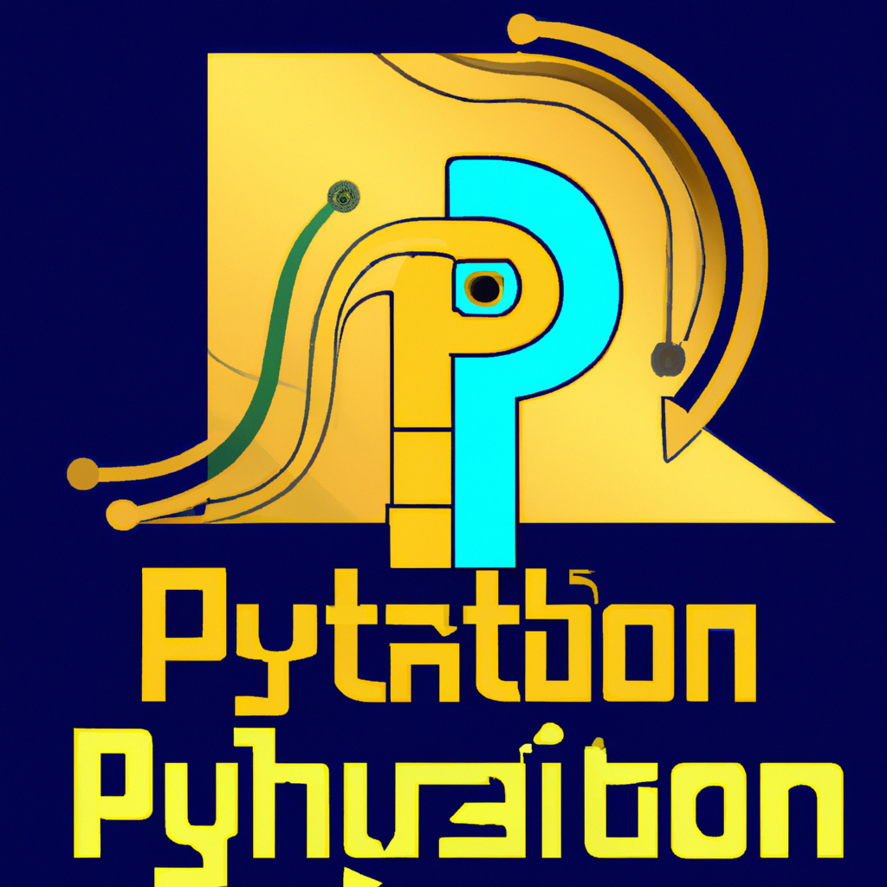

The future of Python and AI
As technology continues to advance at an exponential rate, the rise of artificial intelligence (AI) has been a hot topic in recent years. And as a programming language, Python has been at the forefront of this revolution. From chatbots to self-driving cars, Python has been the go-to language for many developers working on AI projects. But what does the future hold for Python and AI?
One of the main reasons why Python has become a popular choice for AI development is its simplicity and versatility. With its easy-to-learn syntax and large library of packages, Python has made it easier for developers of all levels to work on AI projects. This has also led to a growing community of Python developers who are constantly pushing the boundaries of what is possible with AI.
But as AI continues to evolve and become more complex, the demand for more advanced tools and techniques will also increase. This is where Python may face some challenges. While it has been a great language for beginners and small-scale projects, it may not be equipped to handle the demands of larger and more complex AI systems.
One of the main concerns is the speed and performance of Python. While it may be great for prototyping and experimentation, it may not be the most efficient language when it comes to running large-scale AI applications. This is where other languages like C++ and Java may have an advantage.
However, this doesn't mean that Python will become obsolete in the world of AI. In fact, many experts believe that Python will continue to be a key language in AI development, especially in the areas of data analysis and machine learning. With the rise of big data and the need for advanced data processing tools, Python's data science capabilities will continue to be in high demand.
Furthermore, the Python community is constantly working on improving the language and making it more efficient for AI development. Projects like Numba, a just-in-time compiler, and PyPy, a high-performance implementation of Python, are already making strides in improving the speed and performance of Python.
In conclusion, while there may be some challenges ahead for Python in the world of AI, it is still a powerful and versatile language that will continue to play a significant role in the development of AI. With advancements in technology and the dedication of the Python community, we can expect to see even more exciting and innovative applications of Python in the field of AI in the future. So, for all the Python enthusiasts out there, the future of AI looks bright and full of opportunities. Let's keep learning and exploring together.